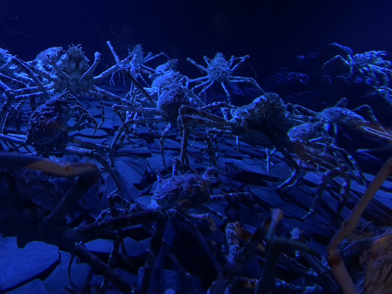
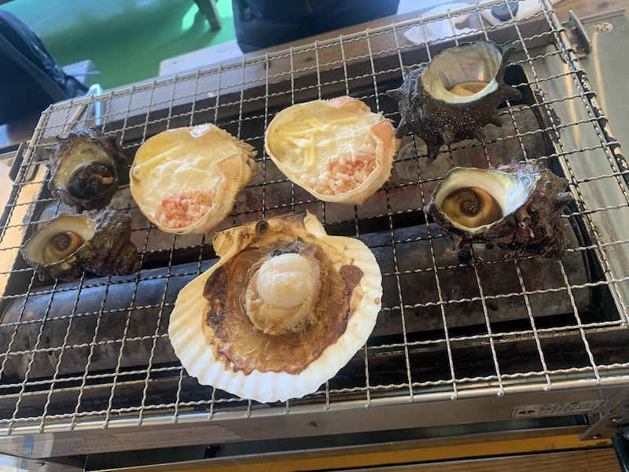

Aquamarine Fukushima
The aquarium highlights the sea life in the Shiome Sea, where rivers flow into the sea and meet the collision of the Kuroshio and Oyashio ocean currents. The centerpiece tank, "The Shiome Sea", holds 2,050 cubic meters (540,000 U.S. gal) and contains a triangular tunnel that separates two tanks with different water temperatures (the two currents). The aquarium includes a botanical garden on the fourth floor that shows the plant life of Fukushima, and from which visitors can see the top of the main tank.
Iwaki Lalamew
Opened on July 25, 1997 as a tourist product center in Iwaki City. There are zones such as eating and drinking zone, fish zone, and sales zone on each floor in a two-story facility.
The ground floor was almost destroyed due to the tsunami caused by the Great East Japan Earthquake on March 11, 2011, and operations were suspended. It was restored and reopened on November 25 of the same year. The exterior of the facility is almost the same as before the renewal, but a new indoor playground "Wanpaku Hiroba Miyumyu", one of the largest in the Tohoku area for children who can't play much outside because of the nuclear acident, has opened on the first floor.